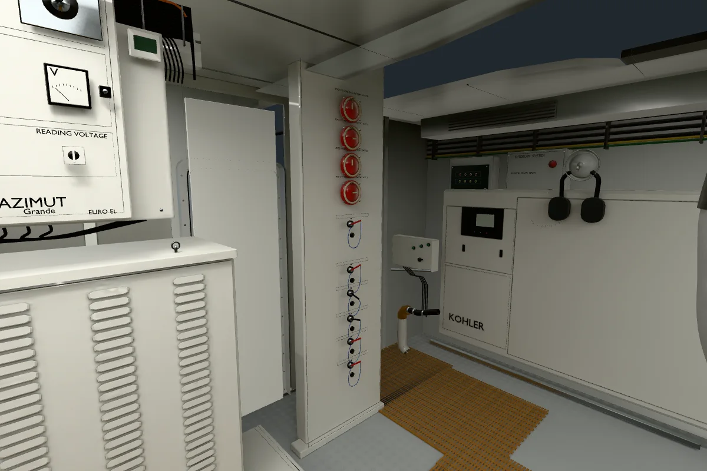
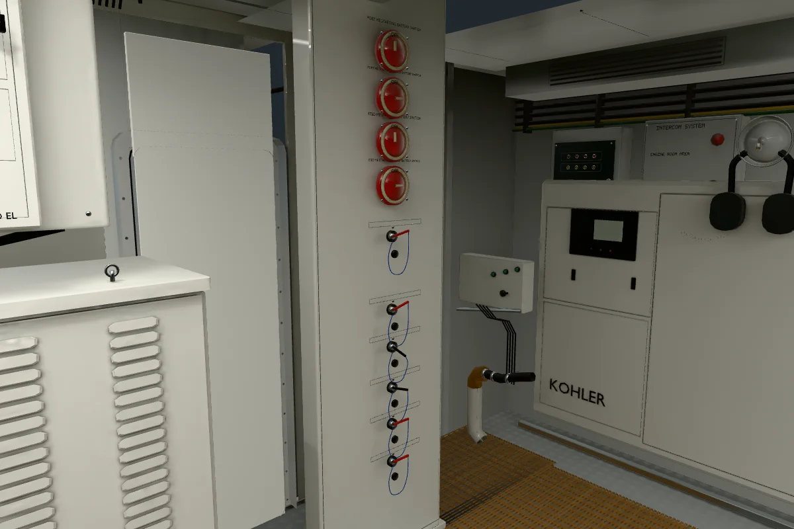

Se retiraron los peldaños, las carcasas blancas, el pasamanos y sus soportes. Su reubicación queda pendiente. Los diez mandos, las geometrías y los acabados de ambos motores conservan su posición y forma.
Abrir el cuarto actualizado · Blender editable y bakes R04 · Resultados verificables
Las comparaciones usan la misma cámara y proyección. Se regeneraron cuatro atlas y tres reflejos sin la escalera. La navegación dejó de aplicar el agachamiento de la escalera retirada.



Se verificó la ausencia de los 2042 triángulos originales y los 1650 de la escalera R03; los atributos de todas las superficies conservadas coinciden. Los 629 archivos del yate original y 73 archivos mecánicos protegidos siguen intactos. La comprobación de navegador utiliza SwiftShader y no establece rendimiento de GPU real. La semejanza del resto del cuarto continúa en revisión.